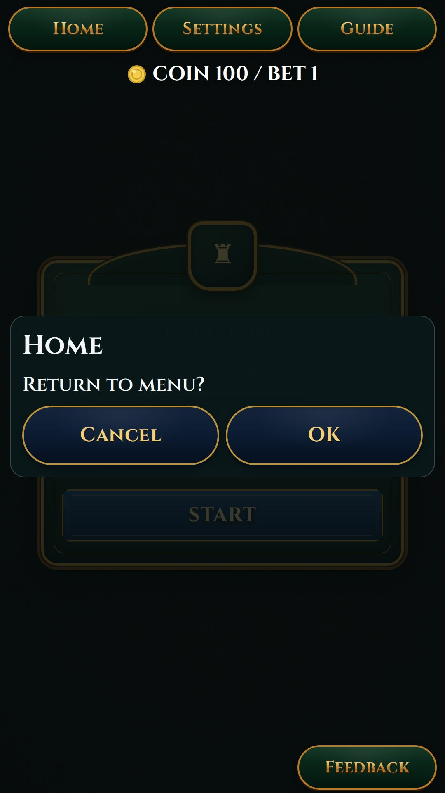
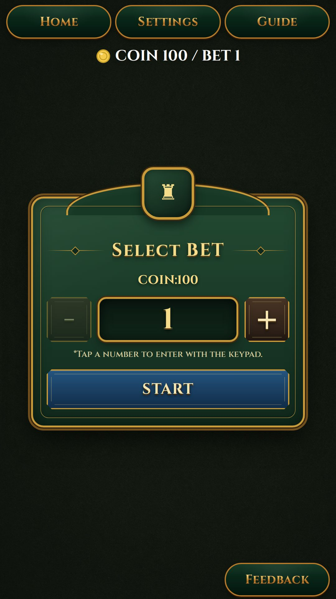

test-cases.html。ここは実行結果のみを追記専用で記録（日付・ケースID・確証根拠・判定・証跡）。
画像は 相対参照 img/<file>.jpg（file:// で開いても表示）・クリックで拡大。証跡は old-maid のもののみ。
OLD/test-log.2026-06-25_falseOK-retracted.html に保全。
| 日付 | ケースID | 確証根拠 | 判定 | 証跡 |
|---|---|---|---|---|
| 2026-06-25 | BK-1 （最重要） |
バグ：Android 標準の戻る（システムバック）／ブラウザ戻るで、「戻りますか」確認なしにメニューへ直帰。 原因： old-maid-standalone-app.handleGameBack() が emitGoHome() を直呼びし、確認ダイアログを持つ盤面 old-maid-game-table.handleSystemBack()（→confirmHomeOpen=true）を握りつぶしていた（盤面コメントが警告していた通りの再発）。修正：override を撤去し基底 handleGameBack＝盤面 handleSystemBack に委譲。Flutter 側は PopScope(canPop:false)→onAndroidBack() の戻り true=消費（アプリ終了しない）を確認済（lib/main.dart）。確証(WEB・同一 handleSystemBack 経路)：ゲーム中に戻る→「Home / Return to menu? / Cancel / OK」ダイアログ表示（screen=game のまま）。Cancel でゲーム継続（confirmHomeOpen=false・screen=game）を render 目視。pageerror 0件。 |
修正OK（WEB目視） Android 実機の最終確認＝人間（実機のみ可） |
 戻る→確認ダイアログ
|
| 2026-06-25 | BG-1 | BET モーダル表示中もヘッダー(Home/設定/ガイド)＋フッター(FEEDBACK)が通常ゴールドで活性、BET 内の小3ボタンは撤去（showTools=false＋bet-overlay pointer-events:none＋header/footer 前面化）。old-maid を render 目視（重なり・見切れ無し）。※同実装を blackjack/poker/high-low/memory にも横展開（証跡は各 img/bg1-<game>-bet.jpg）。 |
OK（WEB目視） |
 BET中・ヘッダー/フッター活性
|
| 2026-06-25 | BG-2 | テンキー／BET +- のタップ音を共有 playSubmitSound() に集約（+/- は押下開始1回のみ・二重防止で親の鳴動撤去）。コード経路は確認。実音(ON で鳴る/OFF で無音)は実機＝人間確証（SD-1）。 |
△（実音は人間） | —（音=実機確認） |
| 2026-06-25 | ホーム戻りで再生中 SFX を stopAllEffects() で停止＋フェード中(out+in≈2×=920ms)の新規鳴り込みを suppress で抑止（submit-sound.ts に追跡/停止/抑止を集約、全ゲーム経由。memory shell の自前 new Audio も共有経由へ統一）。
【WEB 実測 2026-06-25】Playwright で HTMLMediaElement の play/pause を計測。old-maid で BET START 直後（ ※「耳での実音」最終確認のみ人間（SD-1）。停止の発火は WEB で実証済。前回 △（人間頼み）と書いたのは過小評価＝訂正。 |
WEB実測OK 耳確認=人間 |
—（計測ログ：home+355ms で start/submit_btn/submit が pause、戻り後 SFX 0件） |
{kind=link}
{kind=link}